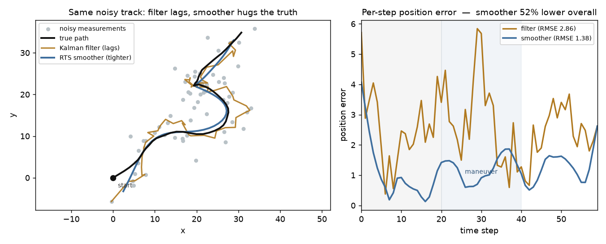

Every state estimator faces one choice — estimate online from what you've seen so far, or wait for the whole batch and use future measurements too. The Rauch-Tung-Striebel smoother is a backward pass that does the latter, and it beats the Kalman filter it's built on.

A Kalman FILTER is online and causal: at each step it fuses the motion model with the measurements seen so far, so its estimate for time k depends only on the PAST and present. That makes it lag the truth — worst early, before it has converged, and around a maneuver it can't anticipate. The RTS SMOOTHER runs the same forward filter, then adds a BACKWARD recursion: each smoothed state blends the forward (past-only) estimate with information flowing back from every FUTURE measurement. Same data, same model — just used offline, in both time directions.